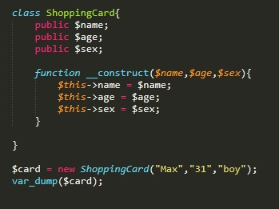

Конструктор класса нужен для того что бы сократить количество кода
например у нас есть класс с некоторыми свойствами. Мы объявляем объект класса и только после того обращаемся к свойствам нашего объекта и помещаем в них значения. С помощью конструктора мы можем заполнять эти свойства во время объявления экземпляра класса
Конструктор должен находиться внутри класса и объявляется как функция с именем __construct. Входными параметрами указываются переменные значения которых в теле конструктора будут присваиваться свойствам класса.
Пример:
